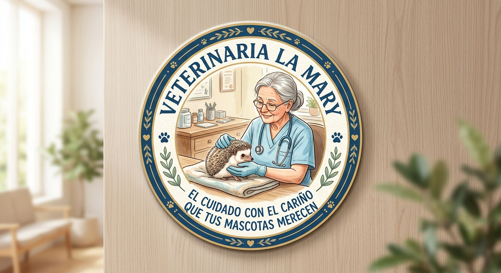

Nuestra Historia
Hace más de 20 años, un grupo de apasionados decidió abrir un espacio dedicado al cuidado y bienestar de las mascotas. Hoy, seguimos comprometidos a brindar servicios de alta calidad y atención personalizada.
¡Bienvenidos a nuestra veterinaria, donde la salud y felicidad de sus mascotas es nuestra prioridad!

¿Por qué elegirnos?
Tecnologías y técnicas de vanguardia para garantizar diagnósticos precisos.
Programas de prevención, vacunación y asesoramiento nutricional.
Colaboración estrecha con refugios para apoyar la adopción local.
Compromiso ético y responsabilidad con la comunidad.
Nuestros Especialistas
Un equipo altamente capacitado que comparte tu pasión por los animales.

Dr. Juan Pérez
Veterinario jefe. Especialista en cirugía general y traumatología con más de 15 años de experiencia.

Dra. Ana Gómez
Especialista en nutrición animal y medicina preventiva. Coordinadora de talleres educativos.

Dr. Carlos Ruiz
Médico clínico de urgencias 24h. Experto en cuidados intensivos y ecografía veterinaria.